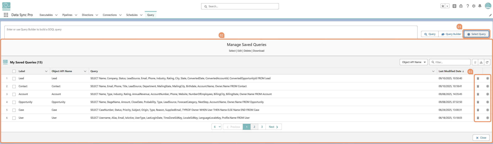

Query Manager lets you save, organize, and reuse queries through a few simple actions:
- Save Query — Store the current query for future use.
- Select Query — Browse saved queries (sorted by Last Modified Date), load one, adjust it if needed, and execute.
- Sort & Filter — Sort by Label or Object API Name, or use a Column Filter to locate a specific query.
- Edit or Delete — Update labels for clarity, or remove queries you no longer need.
